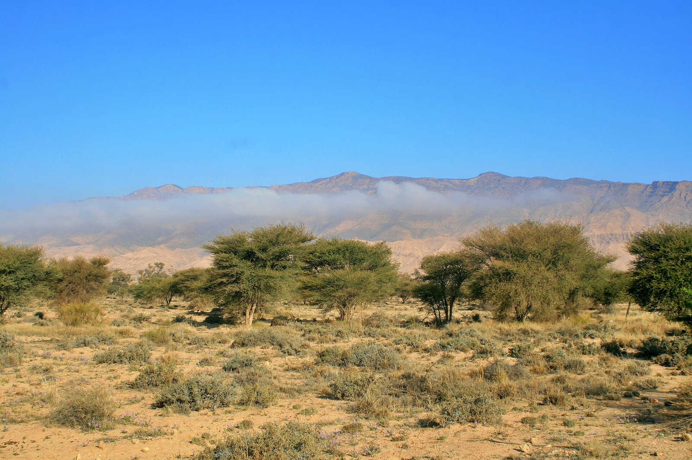
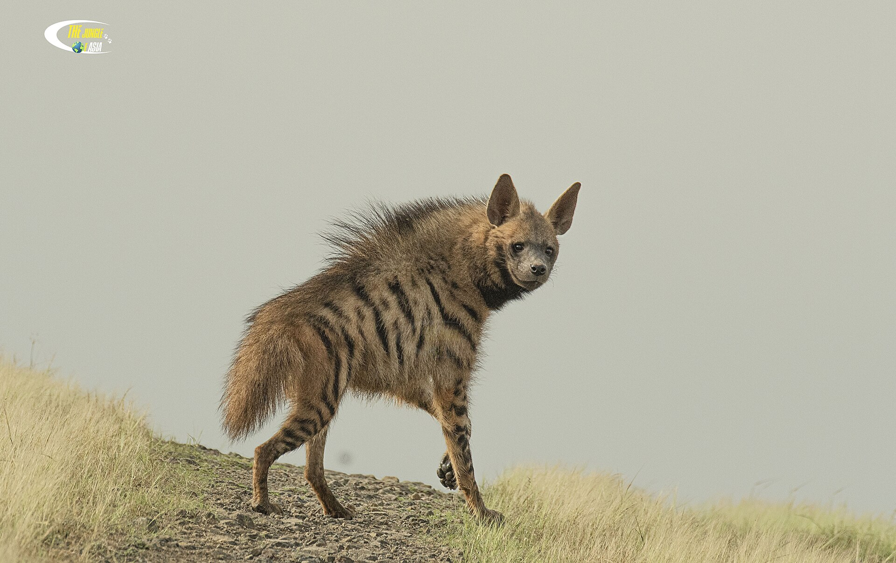
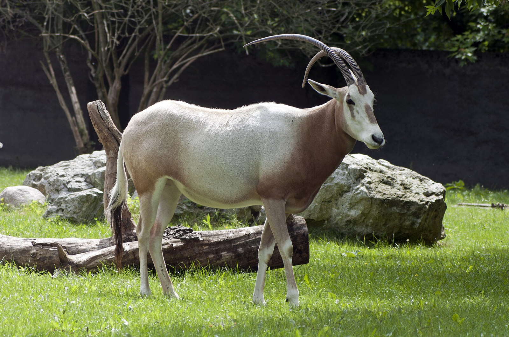
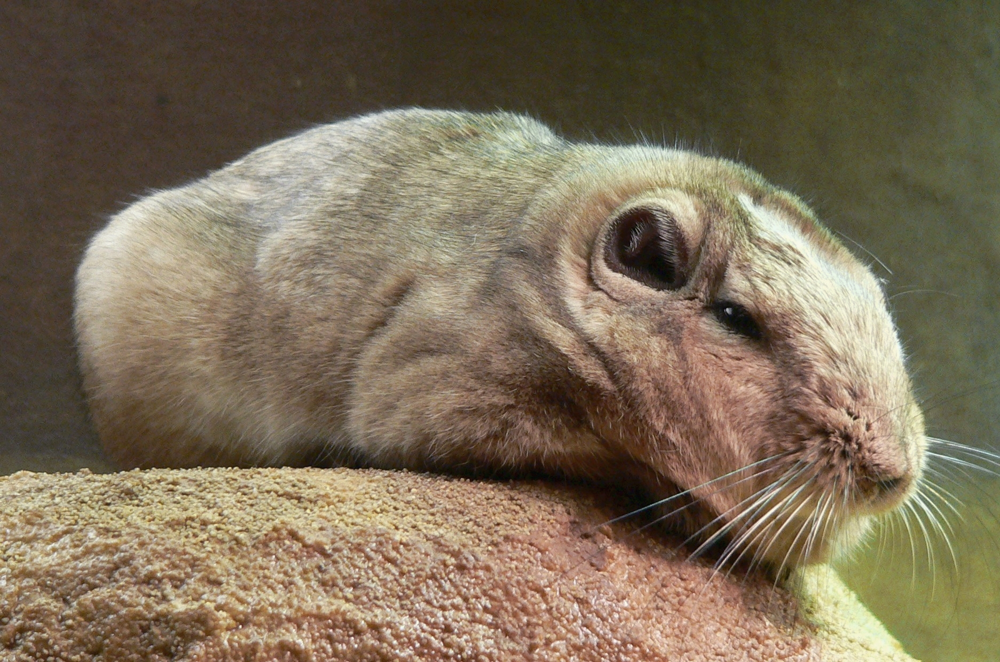
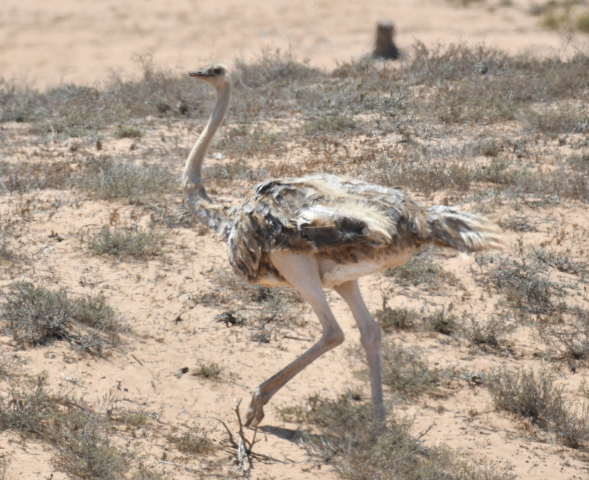
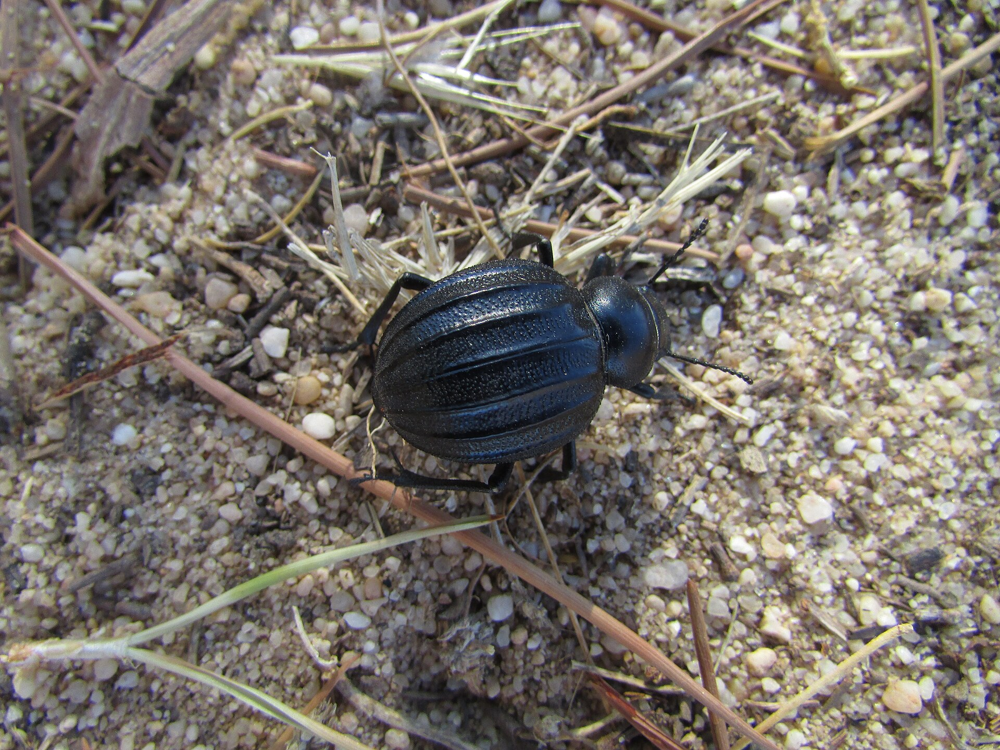
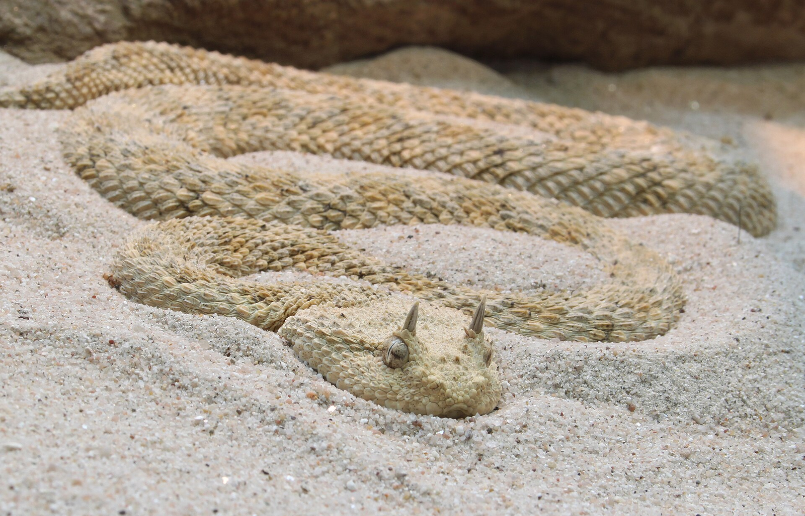

38 plant species are catalogued: the Acacia raddiana trees that give the savanna its name, the drought-adapted shrubs (white broom, wormwood, silk vine), the grasses of the plain and the wildflowers of the wet season. The trees tolerate the aridity thanks to deep roots that reach the water table; they are centuries old, flower after the first rains and drop the protein-rich pods that feed the park's large herbivores — the primary consumers of the flora are the reintroduced antelope and the Barbary sheep.

The park's predators are the striped hyena, the African golden wolf and the red fox. All three are mostly nocturnal and rarely seen: they are counted by their traces — tracks, scats and kills — and by the camera traps that watch the water points at night.

The Barbary sheep of Djebel Bouhedma and the reintroduced antelope — scimitar-horned oryx, dama gazelle and dorcas gazelle — are the herbivores of the park. The wild Barbary sheep share the rocky ridge with the reintroduced herds of the plain.


96 bird species are listed: the resident birds of prey and steppe birds, the waterbirds of the wadi, and the migrations that cross on the pools between Europe and the Sahara. The park also reintroduced the North African ostrich in its reproduction enclosures.

Multiple insect species are catalogued in the park. Insects pollinate the acacia steppe, recycle the dung of the large herbivores and feed the larks and bee-eaters.

The plain and the rocky jebel hold a dozen reptiles — the desert horned viper and the sand viper, the Montpellier snake and the Algerian rat snake, the ocellated skink, the sandfish and the fringe-toed lizards — together with the Saharan frog, the only amphibian of the park, which stays close to the water points. All of them are studied from a distance: photographed, measured and left on the spot, never handled.